NBA Lineup & Matchup Lab
| Type | Individual project |
|---|---|
| Dates | Nov 2026 |
| Built with | Python (pandas, NumPy, SciPy, scikit-learn), PostgreSQL, nba_api, pbpstats, plain JavaScript, GitHub Pages |
| Links | Live site |
Pick any NBA team and any opponent, and this tool tells you which five of your players to put on the floor against their five, and who should guard whom. It's built from every possession of four NBA seasons. I wrote the data pipeline, both statistical models, the optimizer and the website, then checked every model against games it had never seen.
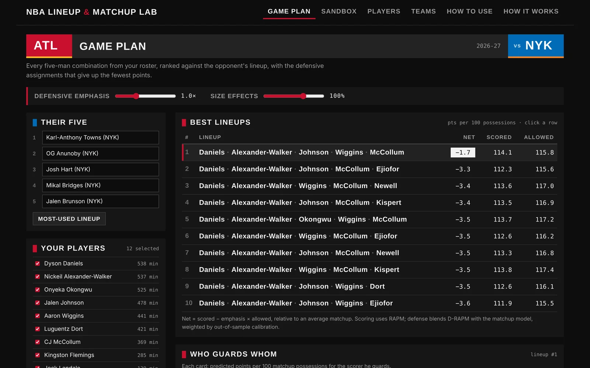
Contents
The question
Before every game a coaching staff answers two questions. Which five players do we put on the floor against their best lineup? And once they're out there, who guards whom? Coaches mostly answer from film and instinct. I wanted to answer them from data, for any team in the league, in a way someone could actually use on a laptop before tip-off.
The two questions turn out to depend on each other. A lineup's value depends on how well it can match up defensively, and the best matchups depend on which five are out there. So the project has two models feeding one optimizer:
- A player rating model (RAPM) that measures how much each player helps his team's scoring margin on offense and on defense.
- A matchup model that predicts how many points a specific scorer gets against a specific defender.
- An optimizer that tries every five-man combination from my roster against their five, finds the best defensive assignment for each, and ranks them.
I also set two rules for myself. It had to work for any team in the league. And every number on the site had to be tested on games the model had never seen, because a model that only explains the past isn't useful to a coach.
A crash course in the ideas
This project uses a handful of ideas from statistics. If you've never done data analytics, this section is everything you need to follow the rest of the page.
Possessions and "per 100"
A possession is one team's turn with the ball. It ends with a made shot, a defensive rebound, a turnover or the end of a period. Fast teams have more possessions per game than slow teams, so comparing raw points is unfair. Every rating in this project is points per 100 possessions, which is about one game's worth. A team that scores 115 and allows 110 per 100 possessions has a net rating of +5.
Why plus-minus isn't enough
The simplest way to judge a player is plus-minus: the team's points minus the opponent's points while he's on the floor. The problem is that it mixes up a player with everyone around him. A backup who always plays next to the team's superstar will have a great plus-minus without being great himself, and a good player stuck on a bad bench unit will look terrible.
Regression: splitting credit fairly
A regression is a method for figuring out how much each input contributes to an outcome. Imagine thousands of short stretches of basketball, each with ten known players and a known result. Every player appears in hundreds of different combinations, with different teammates and against different opponents. Regression finds the set of player ratings that best explains all those results at once. Because it sees the backup both with and without the superstar, it can tell their contributions apart.
Overfitting and ridge regression
Basketball is extremely noisy. One lucky three-pointer can swing a two-minute stretch by six points. A plain regression tries to explain every bit of that noise and produces wild ratings, like a bench player rated +25 because he got lucky in 40 possessions. That's called overfitting: memorizing noise instead of learning the pattern.
Ridge regression fixes this by adding a penalty that pulls every rating toward zero (average). A player only earns a rating far from zero if there's a lot of evidence for it. The size of the penalty is a setting called alpha: too small and the model overfits, too large and every player looks average.
Cross-validation: testing on unseen data
How do you pick alpha, or know if a model is any good? You hide some data from it. Cross-validation splits the data into chunks, trains on all but one, and scores predictions on the hidden chunk. The alpha that predicts hidden data best wins. For the final report card, I trained on two full seasons and tested on the following season.
Poisson regression
Regular regression assumes effects add up. Points scored in a matchup are counts (0, 2, 3, ...), and effects there naturally multiply: a defender who holds everyone 20% below their usual scoring takes more points away from a 30-point scorer than from a 10-point scorer. Poisson regression is designed for counts and works in multiplication. This turned out to matter a lot, as I explain in Step 3.
The Hungarian algorithm
Once you know how many points each of your five defenders would allow against each of their five scorers, you have a 5×5 grid. The assignment problem is picking one cell in each row and column so the total is as small as possible. The Hungarian algorithm solves it exactly.
Step 1: Getting the data
Everything starts from public NBA data. I used two Python libraries: nba_api, which talks to the NBA's stats website, and pbpstats, which reads the play-by-play feed (every shot, foul, rebound and substitution) and splits each game into possessions with the ten players on the floor for each one. I stored it all in PostgreSQL, a database, so I could ask questions of it with SQL and so later steps never had to download anything again.
The full pull covers four seasons and took hours, because the NBA's site needs a pause between requests. The pipeline can be run again any time to add new games.
Setting up
I had never run a database or used git from the command line before, so the first problems were simple ones.
Installing the wrong database program
I installed DataGrip, which is a program for viewing databases, thinking it was the database itself. It opened fine but had nothing to connect to.
Installed the actual PostgreSQL server (version 19) from the official installer, set the password, and created the nba_lab database. One more surprise: when psql asks for a password it shows nothing as you type, which looks broken but is a normal security feature.
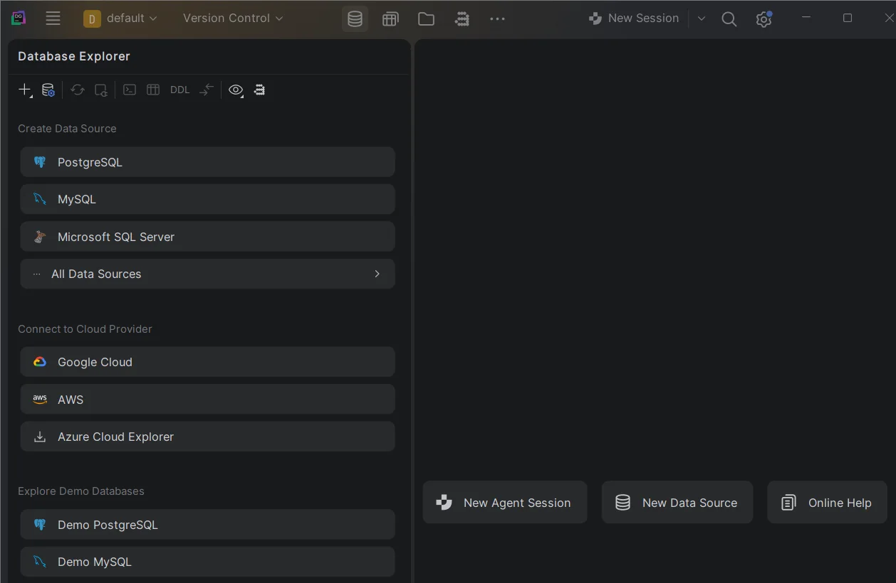
"git is not recognized"
My laptop didn't have git, so I couldn't download my own repository. Later, my first commit failed with "Author identity unknown" because git didn't know who I was.
Installed git with Windows' package manager (winget install Git.Git), then set my name and email once with git config --global.
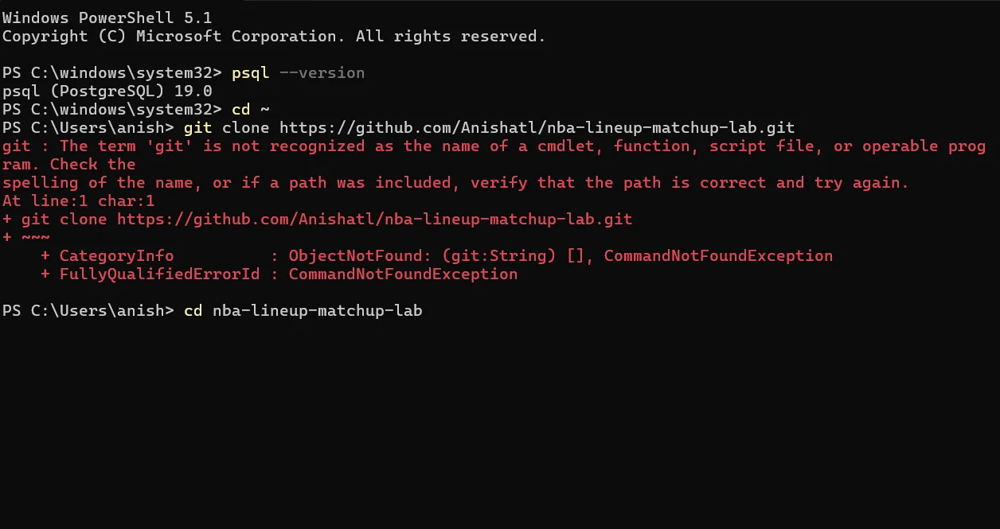
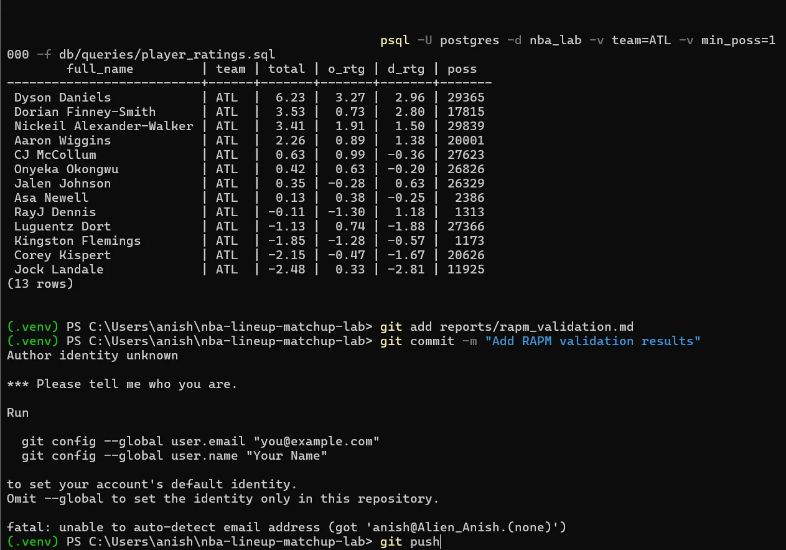
Making sure the points add up
The most important check in the whole project is simple: if I add up the points in every stint of a game, do I get the official final score? If not, the stints are missing something, and every model built on them inherits the error. I wrote check_stints.py to compare the two for any set of games.
Stints were about 5% short on points
My first version added up points by looking for made shots and free throws. On the first five games of 2025-26 the stint totals came up short every time: 123 instead of 125 in one game, 77 instead of 92 in another. About 11 possessions per game were being dropped because pbpstats couldn't tell which five players were on the floor.
I changed how the pipeline counts points and works out who's on the floor, so no possession gets dropped. After the fix, every possession was kept and all five games matched the official score exactly.
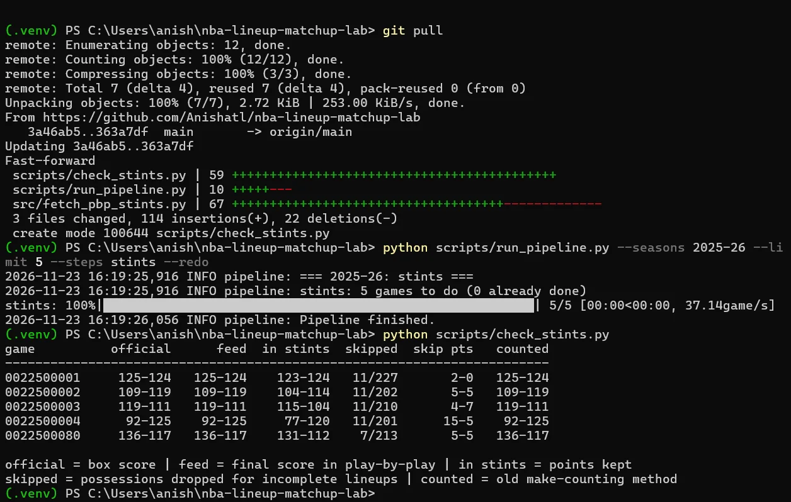
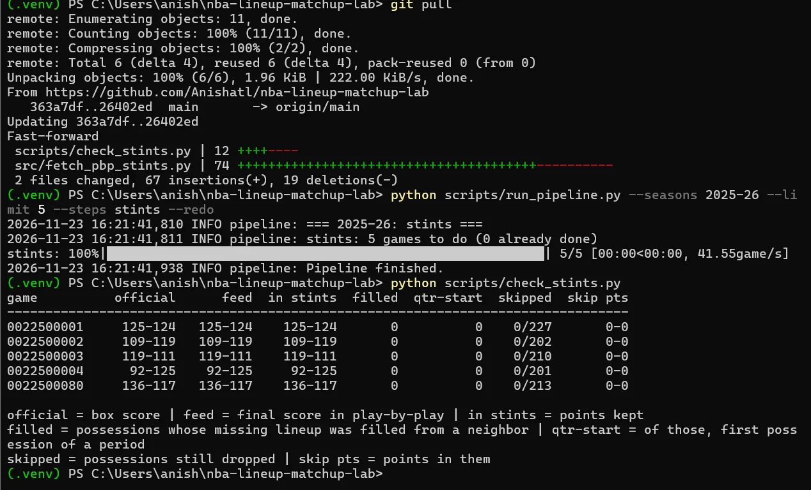
"InvalidNumberOfStartersException"
Some games crashed entirely, mostly in overtime (period 5). pbpstats figures out who started a period by watching who shows up in the play-by-play. If a player plays a whole overtime without touching the ball in a recorded play, it can't find him and ends up with four starters instead of five.
The NBA keeps another official record of who was on the floor. The pipeline now pulls the missing starters from there automatically whenever this error appears.
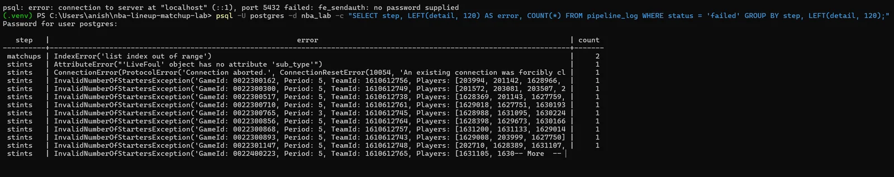
The current season's data was in a different format
The NBA's older play-by-play endpoint now returns nothing, so the pipeline reads the newer "live" feed instead. That feed changed slightly for 2026-27, and pbpstats hadn't caught up. 65 games failed with type object 'Rebound' has no attribute 'EventOrderError', which turned out to be a typo inside the library itself: it tried to raise an error type that doesn't exist. Start-of-period events also arrived with no player ID.
I patched how the library handles the new format from my own code, without editing the library itself. It took two tries: my first patch had a subtle bug that made it skip some of the exact cases it was written to fix.
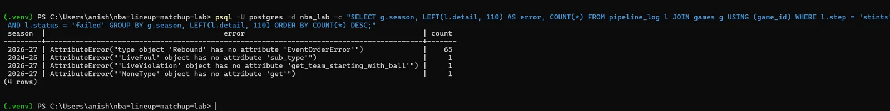
Wasting minutes on data that doesn't exist yet
The NBA posts matchup data a day or so after each game. For recent games the request came back empty, and my retry logic tried each one five times with growing waits, so a handful of new games could stall the run for minutes. Separately, my terminal window closed after one multi-hour pull, and I thought I'd have to start over.
An empty matchup response is now treated as "not posted yet": it's logged as failed without retrying, and the next run picks it up. The closed window cost nothing, because the pipeline keeps track of every finished game, so re-running the same command skipped straight to what was left.
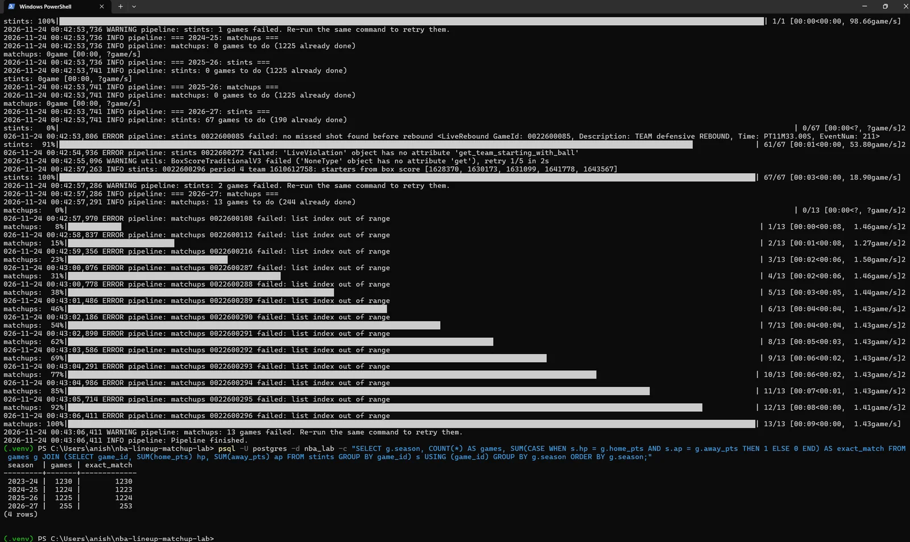
Player names breaking the terminal
A SQL query for the Hawks' best lineups crashed with "character with byte sequence 0xc5 0x86 ... has no equivalent in encoding WIN1252." The culprit was Kristaps Porziņģis: Windows' terminal uses an old character set without the letters in his name (or Vít Krejčí's).
Switched the terminal and the database connection to UTF-8, which handles every alphabet, and saved that setting permanently.
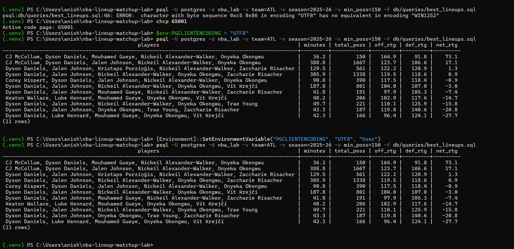
The final coverage: in every completed season, the stint totals match the official score exactly in all but one or two games. The table below is from the site's About page.
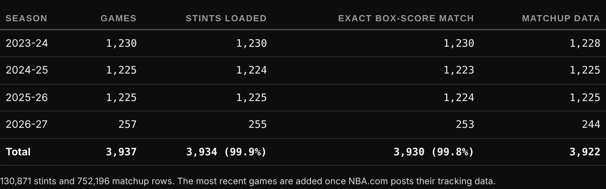
Step 2: Rating players with RAPM
RAPM (Regularized Adjusted Plus-Minus) is the regression idea from the crash course, applied to stints. It's the same family of model NBA front offices use, and I built it from scratch.
RAPM gives every player two numbers. O-RAPM is how many points per 100 possessions his presence adds to his team's offense. D-RAPM is how many he takes away from the opponent's. Under the hood it's a ridge regression over every stint in four seasons, with home-court advantage and the age of the data taken into account, and its penalty was tuned with cross-validation. On the website, 0 is an average player and higher is better on both ends.
Did it work?
I trained on 2023-24 and 2024-25, then predicted every game of 2025-26 using only the players on the floor. The baseline guesses the league average every time. Raw plus-minus and RAPM use each player's rating from the training seasons.
| Predictor | Game error (RMSE) | Correlation with actual margin |
|---|---|---|
| League average (no information) | 16.66 | −0.03 |
| Raw plus-minus | 15.99 | 0.29 |
| RAPM | 15.61 | 0.34 |
RMSE is the typical size of a miss, so lower is better. Correlation runs from 0 (no relationship) to 1 (perfect). A correlation of 0.34 on next season's games might sound low, but single NBA games are close to a coin flip with a lot of noise. The point is that RAPM clearly beats both the naive guess and raw plus-minus on games it never saw.
Step 3: The matchup model
RAPM says how good a player is overall. It can't say whether Dyson Daniels should guard Jalen Brunson or Karl-Anthony Towns. For that I used the NBA's matchup data: for every game, how many possessions each defender spent on each scorer, and how many points the scorer produced. That's 752,196 records across four seasons.
The model learns how dangerous each scorer is, how much each defender suppresses whoever he guards, and how size differences between them change the result. That lets it predict pairs that have never faced each other.
An additive model made every assignment equal
My first matchup model simply added a scorer rating and a defender rating together. Then I realized what that means: if every defender takes away a fixed number of points no matter who he guards, every way of pairing up the same five defenders gives the same total. The who-guards-whom question disappeared.
I switched to a Poisson regression, where a defender takes away a share of his man's scoring. Now a strong defender saves more against a star than against a role player, which matches basketball intuition and makes pairings matter. It also predicted held-out games better.
The solver wouldn't finish
scikit-learn's built-in Poisson solver inches toward the answer step by step. With 860 players it hit its iteration limit over and over, printing pages of "failed to converge" warnings, and its answers weren't trustworthy.
I wrote my own solver based on Newton's method, which uses the shape of the problem to jump almost straight to the answer. It converges in a handful of steps and matches scikit-learn's answer when both finish.
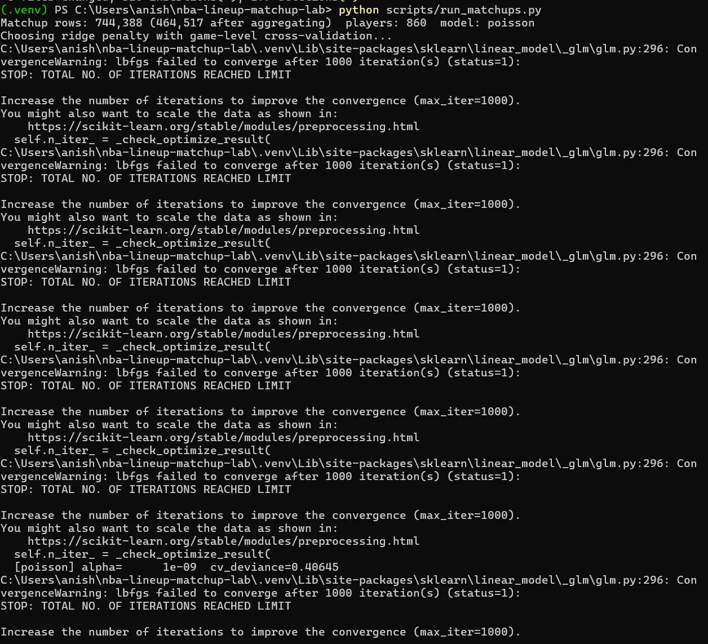
Validation
Same test as before: train on two seasons, predict the third. Here the predictions are per scorer–defender pair.
| Model | Deviance (lower is better) | Pair correlation |
|---|---|---|
| League average | 0.447 | 0.01 |
| Additive (linear), full | 0.428 | 0.355 |
| Poisson: scorer only | 0.434 | 0.342 |
| Poisson: scorer + defender | 0.427 | 0.366 |
| Poisson: full (+ size and style) | 0.423 | 0.363 |
Deviance is the right error measure for count data, like RMSE for ordinary numbers. Adding defenders to a scorer-only model clearly helps, which means defenders really do change how much their man scores. The full Poisson model has the lowest deviance of all. The size terms help too, so mismatches really do cost points.
When the numbers looked too good
The model's first defender rankings didn't pass a sanity check. Amen Thompson supposedly cut his man's scoring by 41%. Shai Gilgeous-Alexander supposedly scored 140% more than an average player. Nobody is that extreme.
Inflated percentages
Ratings were measured against a "zero" player that doesn't exist, rather than against an average player. On top of that, a team's scheme gets blamed on its individual defenders: on a team with great help defense, everyone's man scores less.
First, I re-centered every rating on the average player, which brought SGA down from +140% to a believable +86%. Second, I separated team scheme and help defense from individual defenders, so a player doesn't get credit for his teammates' help.
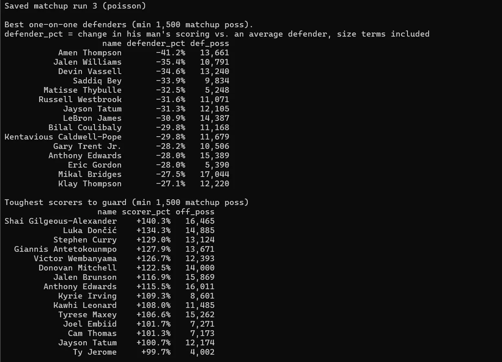
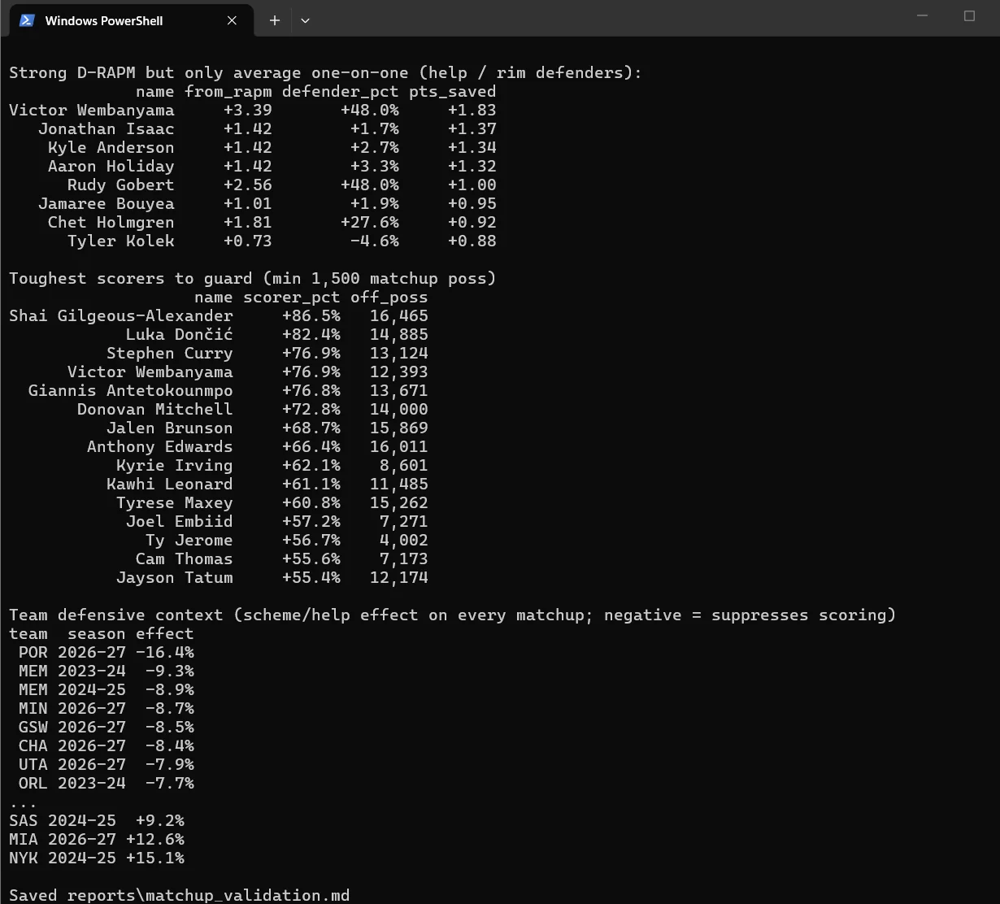
The best defenders in the league looked bad
Victor Wembanyama and Rudy Gobert, two of the best defenders alive, rated below average one-on-one (their man scored 48% more). Meanwhile some players with great one-on-one numbers had weak overall defensive ratings.
This is a real limitation of matchup data, not a bug. Rim protectors leave their own man to block other players' shots, so their "assigned" man gets open looks, while their real value shows up in RAPM. And good scorers often get switched away from strong defenders, so some defenders rarely face the ball. Instead of trusting one-on-one numbers alone, I rank defenders by points saved, which combines D-RAPM and the one-on-one rating. The site flags the disagreements: Help / rim for strong defenders whose value doesn't show one-on-one, and Switched off for great one-on-one numbers with weak overall impact.
Step 4: Combining the two
Now there are two models that each say something about a lineup. Instead of guessing how much each should count, I let a season the models had never seen decide. Combined, they predict game results better than RAPM alone: correlation with the final margin rose from 0.361 to 0.389, and the typical miss shrank from 15.50 to 15.31 points per 100.
Every lineup on the site is scored this way. The Defensive emphasis slider changes how much points allowed count against points scored, and Size effects scales the height terms, for coaches who expect lots of switching.
Step 5: Choosing lineups and assignments
The optimizer is where everything comes together. Given my roster (up to 15 players) and their five:
- List every five-man combination. Twelve players give 792 combinations.
- For each one, build the 5×5 grid of predicted points: each of my players guarding each of theirs.
- Solve the assignment problem with the Hungarian algorithm to find the pairing that allows the fewest points.
- Score the lineup with the combined model and rank them all.
That's about 95,000 assignments for a 12-man roster, which runs instantly. I built a command-line version first to test the logic before building any website.
"Daniels" matched two players
The command line lets you type last names, like --assign Daniels=Brunson. "Daniels" matched both Dyson Daniels and Jaden McDaniels, since one name contains the other, so the tool stopped.
Name matching now prefers players in the relevant lineup or roster first, then exact last-name matches over partial ones. It only asks for more detail when there's real ambiguity.
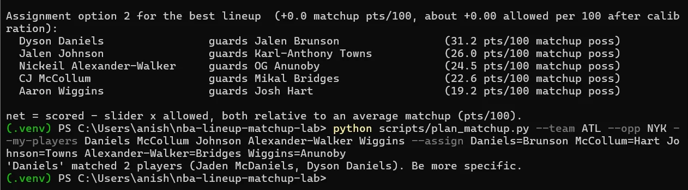
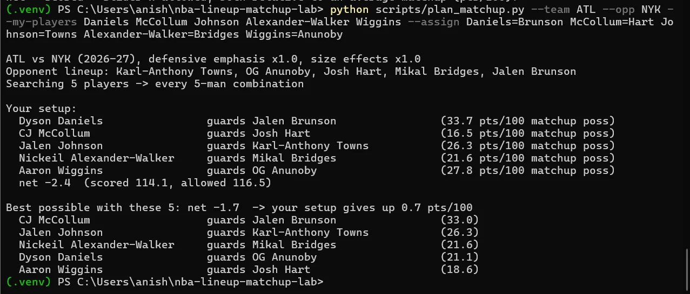
Step 6: The website
I'd used Streamlit for an earlier project and found it slow and buggy, so I built this as a plain static website: HTML, CSS and JavaScript with no framework and no build step, hosted free on GitHub Pages. The models run once in Python, an export script writes the results to a few JSON files, and the browser does the lineup search itself. That keeps the site fast and free to host, and makes it easy to move to a custom domain later.
Because the browser re-implements the scoring and assignment logic in JavaScript, I generated test cases from the Python version and checked that the JavaScript gives the same answers. All 65 matched on real data.
The pages
Game plan (Fig. 1) ranks every lineup from your roster against their five. Clicking a lineup shows the best defensive assignment and the runner-up, with how many points separate them.
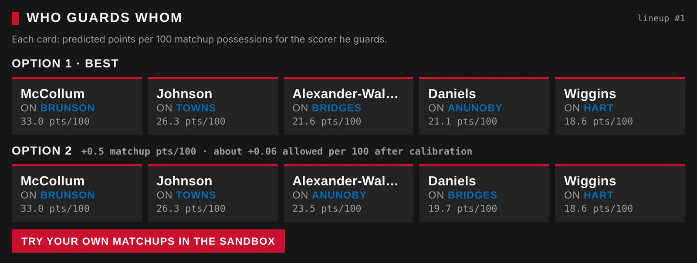
Sandbox lets a coach test their own idea. Pick any five, set each matchup, and it tells you what your setup is worth and how much it gives up against the best assignment for the same players. A half-court diagram shows the pairings, with non-optimal ones highlighted.
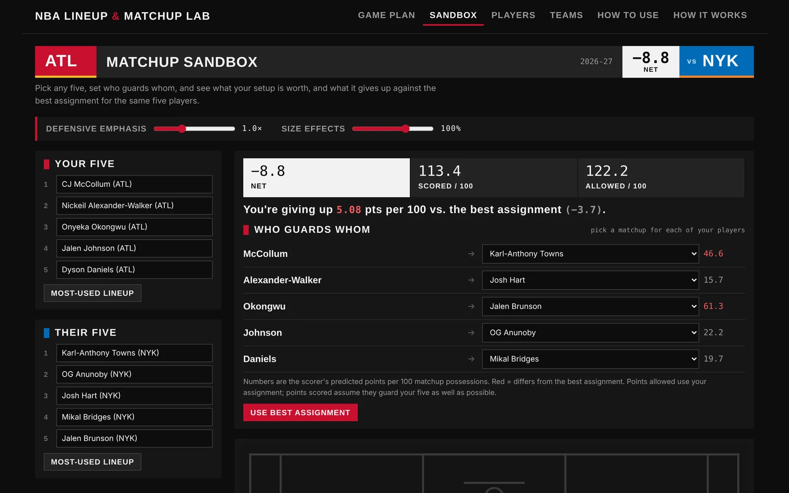
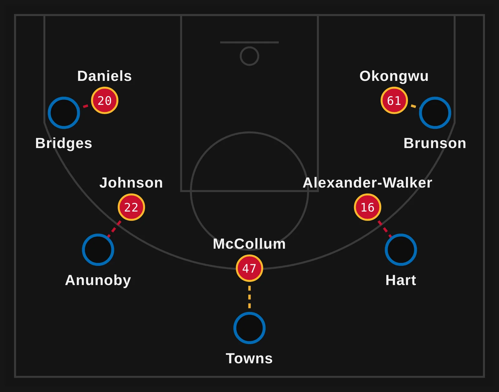
Players lists every player's RAPM, points saved, one-on-one ratings and flags, sortable and searchable. Teams is a one-page scouting report with a lineup luck check: it compares each of a team's most-used lineups with what the model expects from those five players.
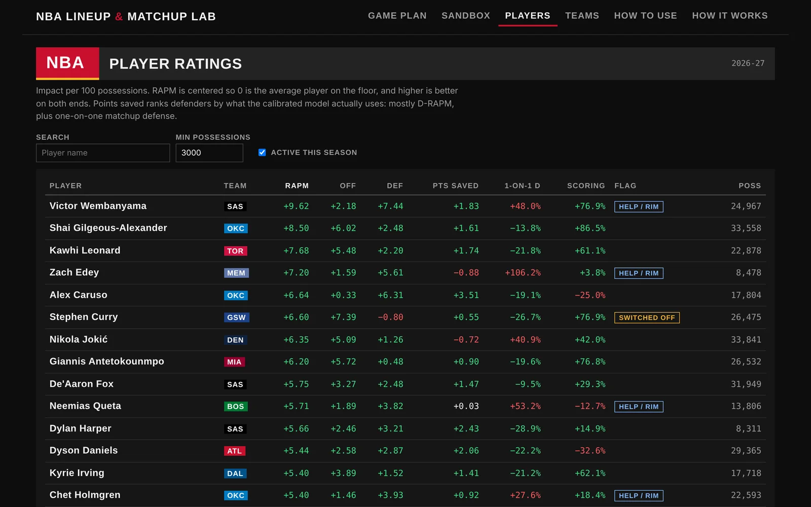
The luck check flagged almost everything
My first version flagged a lineup as "running hot" or "running cold" whenever its actual net rating was more than one standard error from expected. It flagged 37% of lineups. But with a ±1 standard error band, about a third of lineups land outside by pure chance, so most of those flags were noise. The expected values were also too extreme, because they summed raw RAPM ratings.
Expected ratings now come from the combined model, and a lineup is only flagged when its gap is too big to be explained by chance given how many possessions it has played. Now most lineups correctly read "within noise," and the ones that are flagged are worth a coach's attention.
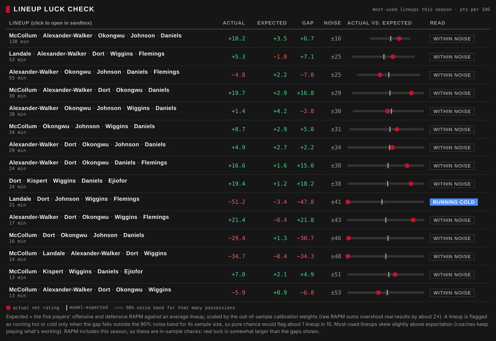
Dropdowns showed the whole league
Picking a player for the opponent's five opened a list of every player in the NBA, ordered by playing time, so finding a Knick meant scrolling past Kevin Durant and Nikola Jokić.
Each dropdown now lists only that team's roster, A to Z. To test a trade or signing you can still type any player's name into "Add any player."
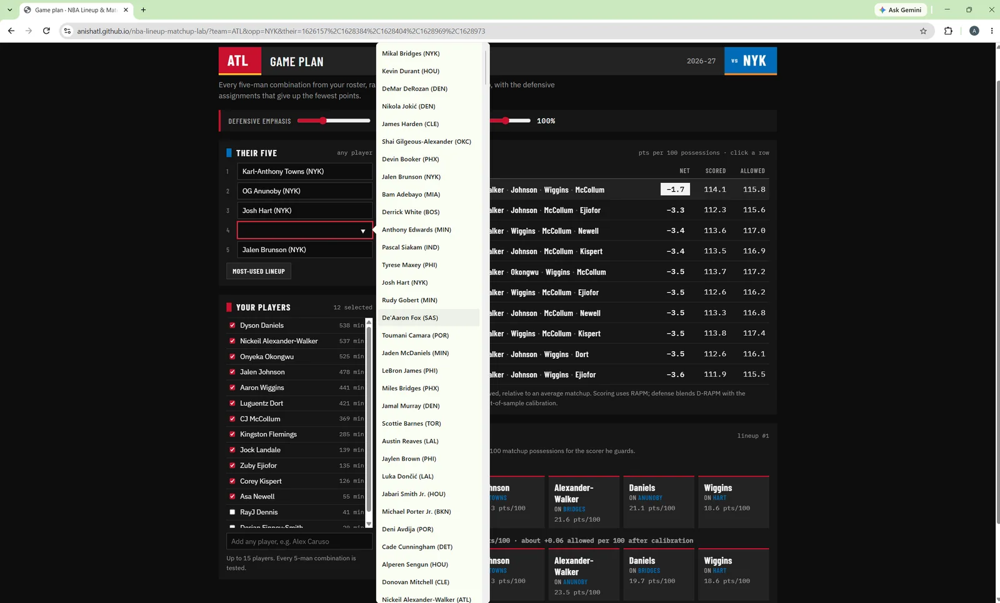
Last, I added an About page that names the data and models and shows how they were tested, and a How to use page that walks through every feature step by step for someone who has never seen the site. Every view is saved in the page's address, so a coach can share an exact game plan as a link.
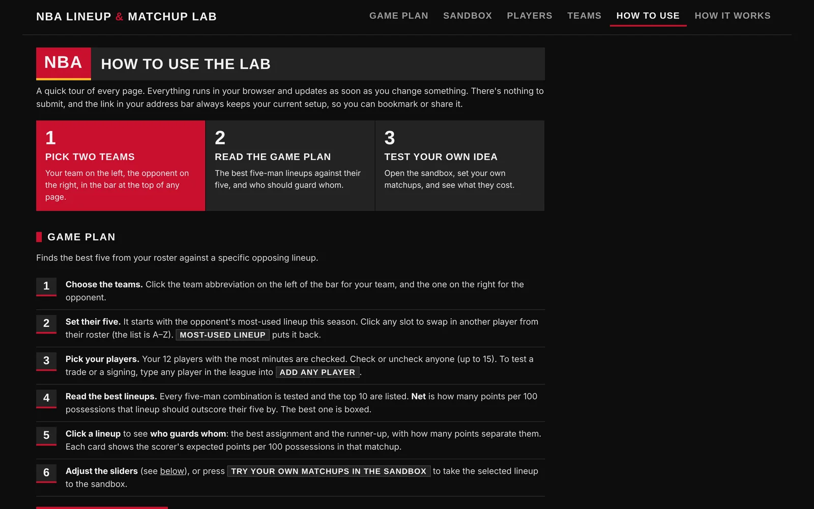
What it found
- Who's on the floor matters much more than who guards whom. Changing the lineup moves net rating by several points per 100. Changing assignments within a lineup usually moves it by tenths of a point, unless you do something badly wrong (see the Sandbox example above).
- Defenders genuinely change their man's scoring. Adding defender ratings to a scorer-only model improved predictions on an unseen season, so one-on-one defense is a real, measurable skill.
- Size mismatches cost points. Height mismatches in either direction raise the scorer's output, and tall defenders matter more against three-point shooters.
- One-on-one data misses rim protection. The league's best help defenders look average or worse in matchup data, so a good defensive ranking has to combine both views.
- Matchups add real information. Adding them to RAPM improved game predictions on a held-out season by about 8% in correlation terms.
What I learned
- Check the data against something official before modeling. The score check caught a 5% point loss that would have quietly biased every rating.
- If a result looks too good, it's probably wrong. The −41% defender and +140% scorer sent me back to find two real modeling problems.
- The model's structure is a decision, not a detail. An additive model made the central question meaningless. Thinking about what the math implies, before trusting its output, mattered more than any tuning.
- Always test on data the model hasn't seen. Every claim on the site is backed by a train-on-two-seasons, test-on-the-next comparison.
- Build for the user. The dropdown, luck-check and How to use changes came from using the tool the way a coach would.
What's next
- Weekly automatic data updates.
- Modeling switches directly, so assignments that are likely to get switched are scored more realistically.
- Adding playoff data and comparing how lineups hold up when the opponent has time to game-plan.
The live site works for every team in the league.
© 2026 Anish Bhatia. All rights reserved.